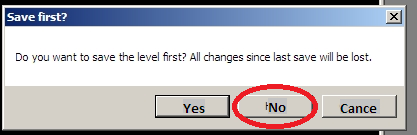
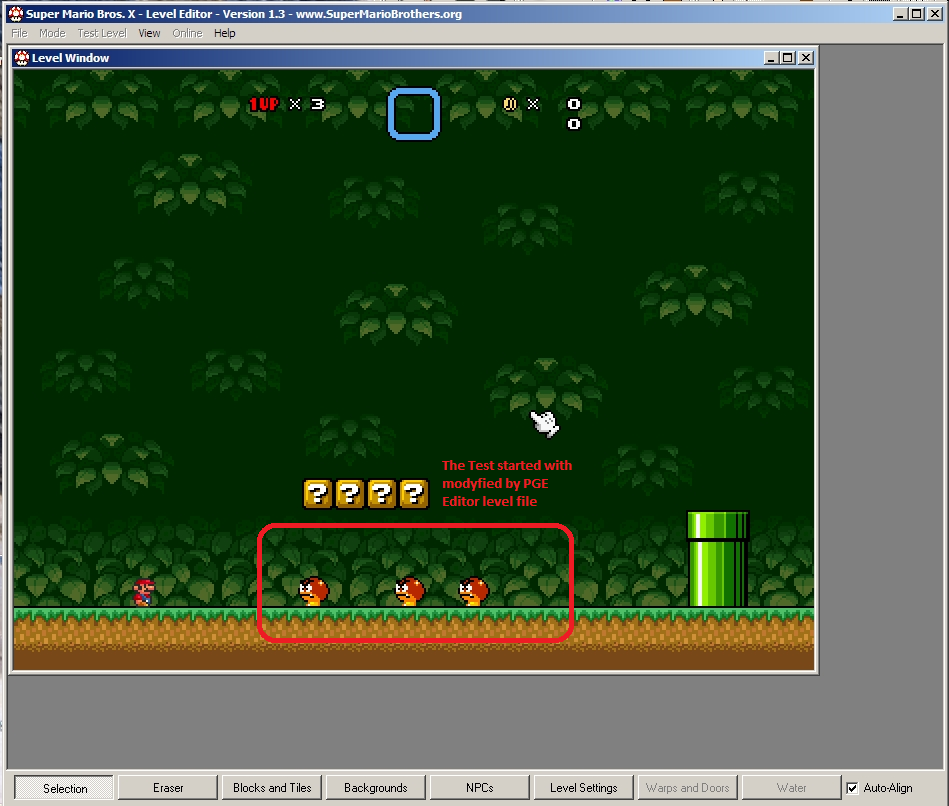

<Be careful, Engine part is under construction, and a lots of features wasn't implemented yet>
To be possible test levels internally, you should install the engine part.
To start testing, open the [ Test -> Run testing] menu item, and current state of the level will be played in the PGE Engine application.
Highly recommended to read PGE Engine manual described in the Engine.Readme.txt file included with PGE Engine.
You can use old SMBX Engine to test your levels
which you made.
Pre-requirements:
Installed and configured SMBX Integration configuration package (to configure it, run the "configure.exe" and then choice actual path to SMBX to integrate config pack with it)
LunaLUA 0.7.3.1 is required, or automatic level tests are will not work. You still be able to run test in the SMBX Engine, but if LunaLUA is not installed, PGE Editor will generate a dummy episode which you can run to start a test of your level file.
If you have everything installed and configured, you can start a level testing in the SMBX with opening the [ Test -> Test in SMBX ] menu item. Game must be launched. If it wasn't launched or you got an error message, you may wrongly configured something. For example, LunaLUA requires pre-installed MSVCR2015 package (Installer has been included with every LunaLUA package).
In-editor tests
If you already ranned a level editor, when you try to start a level test in the PGE, it will be forwarden into already running SMBX Editor and you can do test of the level with using features from old editor platform..
Note: This manual is actual for Vanilla SMBX builds (Official builds <= 1.3 built by Redigit before 2011 year).
If you have LunaLUA-SMBX, here is ability to run direct test, but you must download "SMBX Integration" configuration package and configure it with 'configure.exe' tool included with configuration package.
You need to use only SMBX 1.3 or 1.3.0.1, files saved by PGE Editor files are not compatible with older versions of SMBX by default. If you have older SMBX version, you must choice a file format "SMBX1...64 file [choice version]" and then choice a version code of SMBX version which you have.
Actions sequence:
1) Run PGE Editor first and open necessary level or create and save it.
2) Open the SMBX in editor mode. Both application must be ran! (PGE Editor and SMBX)
3) Open by SMBX Editor same level file which already opened by PGE Editor and leave them, minimize the SMBX window.
Click on the image for see big image:
4) Make the necessary modifications by PGE Editor and save file.
5) Don't reopen level in SMBX after save by PGE! For run test now, you need open menu "Test" and click item "Run test"
On question about saving file, press the "No" if you want run test with edited by PGE file:

And test of edited file was ran!

Copyright © 2014-2016 Platformer Game Engine by Wohlstand project.